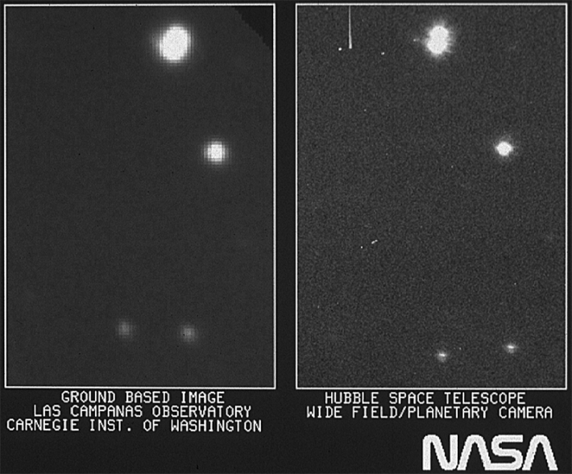
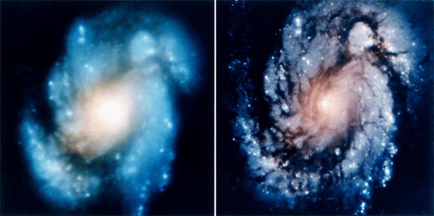
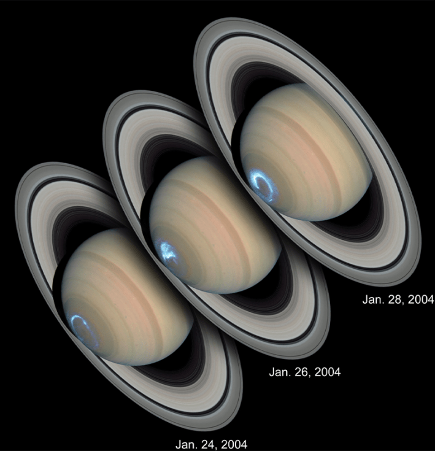
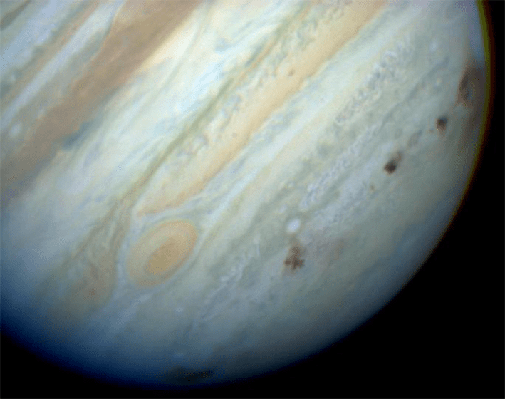
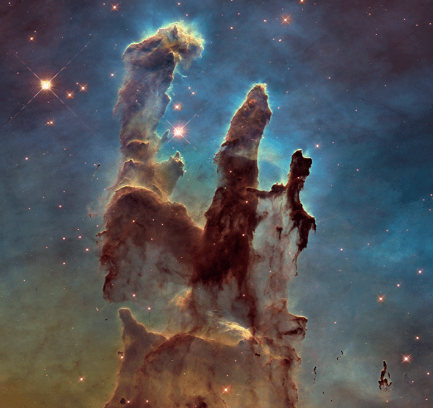
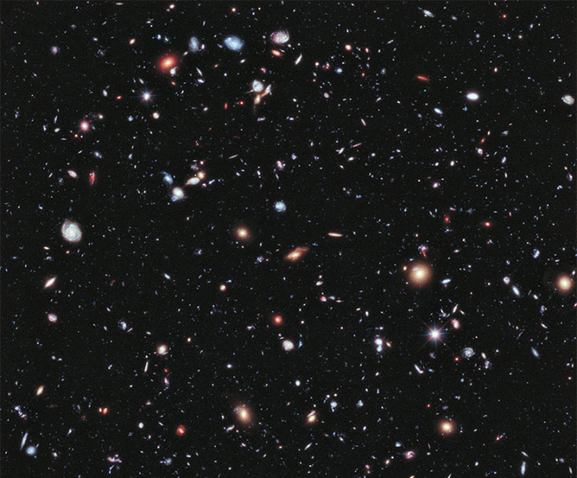
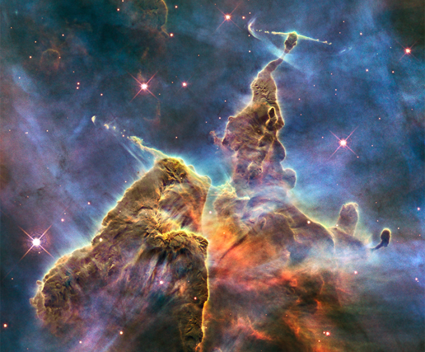
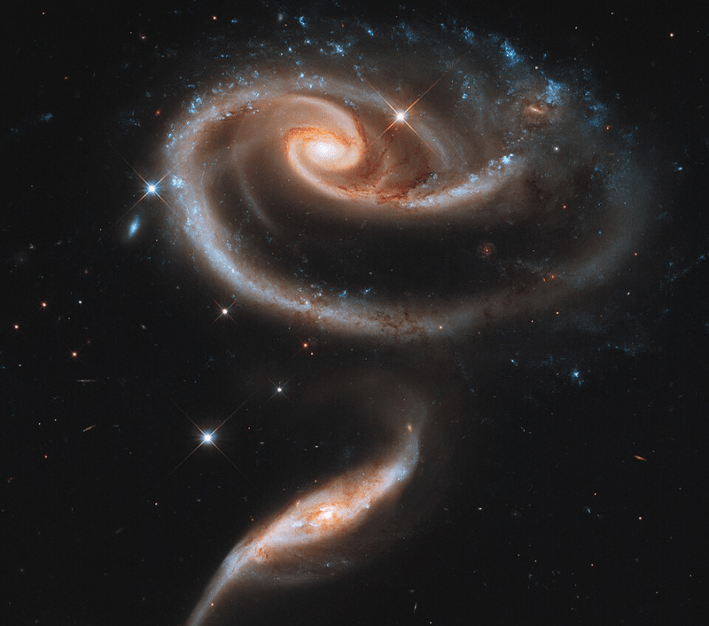
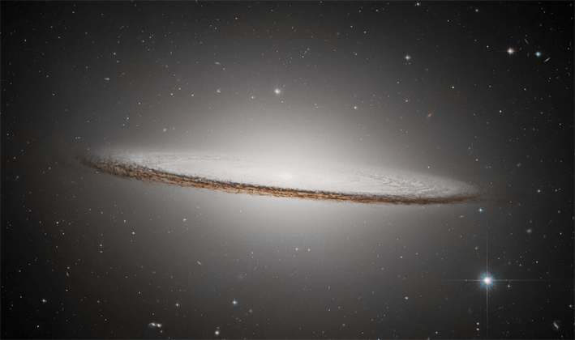
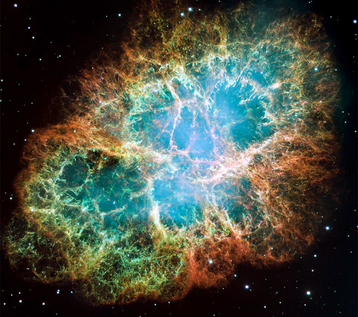

Thirty-six years ago this month, NASA released the first images from the newly launched Hubble Space Telescope, a cluster of stars located in the Carina constellation. A side-by-side comparison with an image of the same area captured by a terrestrial telescope showcased Hubble’s bright future returning much sharper observations from space.

Credit: E. Persson (Las Campanas Observatory, Chile)/Observatories of the Carnegie Institution of Washington; Right: NASA, ESA and STScI.
Of course, soon after that NASA announced the space telescope had a major flaw. The seven-foot tall onboard mirror wasn’t ground to precise specifications, resulting in a 1.3 millimeter spacing error and blurry images. To fix the problem, NASA effectively gave Hubble glasses. In 1993, during the space telescope’s first servicing mission, a fridge-sized corrective device was installed and Hubble’s imaging capabilities were restored.

GALACTIC GLASSES: Images of the core of the galaxy M100 taken before (left) and after (right) Hubble’s “corrective adjustment.” Credit: NASA.
Since then, Hubble’s faulty mirrors have all been replaced, and it’s enjoyed more than three decades of securing breathtaking images of our universe. Here are just a few:

SEEING SATURN: A composite image of natural and ultraviolet light capturing Saturn and the bright blue aurora on its southern pole. Credit: NASA/ESA/J. Clarke (Boston University).

BRACE FOR IMPACT: A composite visible light image of Jupiter showing the dark brown impact spots the comet Shoemaker-Levy left when it crashed into the gas giant in July 1994. Credit: NASA/Hubble Space Telescope Comet Team.

PILLARS IN THE SKY: A composite visible light image of the Pillars of Creation, a region of the Eagle Nebula 6,500 light-years from Earth. Stars are forming from the cosmic dust and gasses within these 5-light-year tall pillars. Credit: NASA/ESA/Hubble Heritage Team (STScI/AURA.

LONG LOOK: A composite image combining 10 years of observations from Hubble’s eXtreme Deep Field camera that shows thousands of galaxies. Credit: NASA/ESA/G. Illingworth, D. Magee, and P. Oesch, University of California, Santa Cruz; R. Bouwens, Leiden University, and the HUDF09 Team.

YOUNG STARS: The Carina Nebula, located within the Carina constellation that Hubble first snapped a picture of in May 1990. This composite image captures signs of stellar activity within the nebula, as young stars shoot out searing hot streams of charged matter. Credit: NASA/ESA/M. Livio and the Hubble 20th Anniversary Team (STScI).

GALACTIC SWIRL: A group of swirling interacting galaxies known as Arp 273 that shows the distortion of the larger galaxy’s arm by the tidal gravitational forces of the smaller galaxy. The smaller galaxy may have passed through the larger one at some point in its past. Credit: NASA/ESA/Hubble Heritage Team (STScI/AURA).

TIP OF THE HAT: The Sombrero Galaxy, located 30 million light-years away in the constellation Virgo. The photo of this massive galaxy was compiled from a mosaic of images captured by Hubble. Credit: ESA/Hubble.

CRABBY CLOSE-UP: The most detailed image of the Crab Nebula ever recorded. This mosaic image captures the six-light-year-wide remnant of a star that exploded in 1054 A.D. and was recorded by ancient astronomers across the globe. Credit: NASA/ESA/J. Hester and A. Loll (Arizona State University).
Lead image: NASA/ESA/M. Livio and the Hubble 20th Anniversary Team (STScI)